Archives : 2005-11
昨天是感恩节 @ Nov 26, 2005
昨天感恩节，和前来南京参加”法国Fashion TV全国模特大赛”的虎子在Phil’s吃了晚饭。

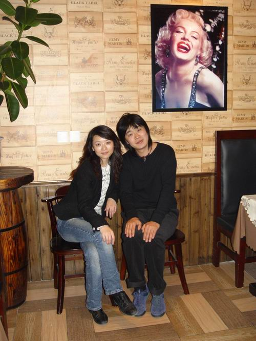
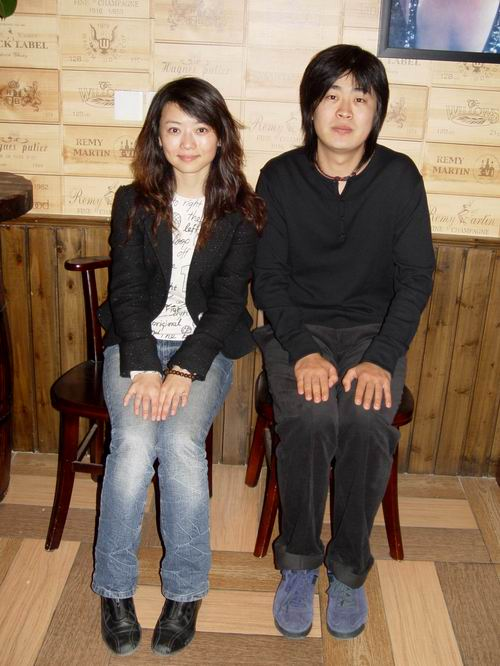
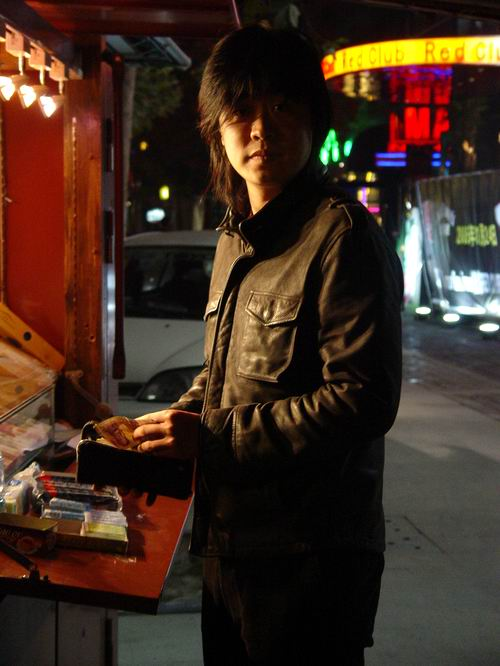
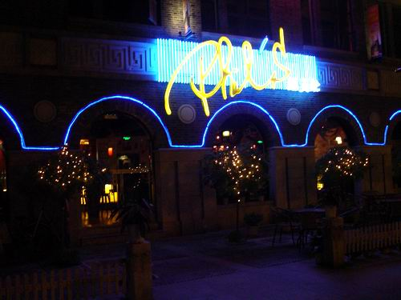
听从你内心的呼唤：乔布斯的故事 @ Nov 26, 2005
原文来自6e
Apple 的CEO Steve Jobs, 一个曾经是睡在地板上, 一个没有钱吃午餐的辍学生, 一个曾经被自己创造的公司赶走的年轻人, 如今却能够将自己的理想展现在全人类面前.
引用文中的话:
物有所不足，智有所不明（Stay Hungry. Stay Foolish.）
这也许是生活的智慧吧. 下面是全文, 来源不详.
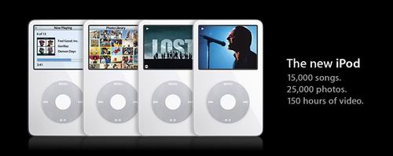
苹果电脑的CEO斯蒂夫·乔布斯在今年6月12日斯坦福大学毕业典礼上的演讲 （域外的朋友给我发来苹果电脑的CEO斯蒂夫·乔布斯在今年6月12日斯坦福大学毕业典礼上的演讲，读后令人不禁动容，其文并无华丽之色，也无英文演讲范例中惯用的排比。遂将全文译出，标题为译者所加，刊登时有删节）。
（斯坦福）是世界上最好的大学之一，今天能参加各位的毕业典礼，我备感荣幸。（尖叫声）我从来没有从大学毕业，说句实话，此时算是我离大学毕业最近的一刻。（笑声）今天，我想告诉你们我生命中的三个故事，并非什么了不得的大事件，只是三个小故事而已。
第一个故事，是关于串起生命中的点点滴滴。（原文为“connecting the dots”指一种小游戏：把标有序列号的点连起来，就构成一幅图画——译注）
我在里德大学呆了6个月就退学了，但之后仍作为旁听生混了18个月后才最终离开。我为什么要退学呢？
故事要从我出生之前开始说起。我的生母是一名年轻的未婚妈妈，当时她还是一所大学的在读研究生，于是决定把我送给其他人收养。她坚持我应该被一对念过大学的夫妇收养，所以在我出生的时候，她已经为我被一个律师和他的太太收养做好了所有的准备。但在最后一刻，这对夫妇改了主意，决定收养一个女孩。侯选名单上的另外一对夫妇，也就是我的养父母，在一天午夜接到了一通电话：“有一个不请自来的男婴，你们想收养吗？”他们回答：“当然想。”事后，我的生母才发现我的养母根本就没有从大学毕业，而我的养父甚至连高中都没有毕业，所以她拒绝签署最后的收养文件，直到几个月后，我的养父母保证会把我送到大学，她的态度才有所转变。
17年之后，我真上了大学。但因为年幼无知，我选择了一所和斯坦福一样昂贵的大学，（笑声）我的父母都是工人阶级，他们倾其所有资助我的学业。在6个月之后，我发现自己完全不知道这样念下去究竟有什么用。当时，我的人生漫无目标，也不知道大学对我能起到什么帮助，为了念书，还花光了父母毕生的积蓄，所以我决定退学。我相信车到山前必有路。当时作这个决定的时候非常害怕，但现在回头去看，这是我这一生所作出的最正确的决定之一。（笑声）从我退学那一刻起，我就再也不用去上那些我毫无兴趣的必修课了，我开始旁听那些看来比较有意思的科目。
这件事情做起来一点都不浪漫。因为没有自己的宿舍，我只能睡在朋友房间的地板上；可乐瓶的押金是5分钱，我把瓶子还回去好用押金买吃的；在每个周日的晚上，我都会步行7英里穿越市区，到Hare Krishna教堂吃一顿大餐，我喜欢那儿的食物。我跟随好奇心和直觉所做的事情，事后证明大多数都是极其珍贵的经验。
我举一个例子：那个时候，里德大学提供了全美国最好的书法教育。整个校园的每一张海报，每一个抽屉上的标签，都是漂亮的手写体。由于已经退学，不用再去上那些常规的课程，于是我选择了一个书法班，想学学怎么写出一手漂亮字。在这个班上，我学习了各种衬线和无衬线字体，如何改变不同字体组合之间的字间距，以及如何做出漂亮的版式。那是一种科学永远无法捕捉的充满美感、历史感和艺术感的微妙，我发现这太有意思了。
当时，我压根儿没想到这些知识会在我的生命中有什么实际运用价值；但是10年之后，当我们的设计第一款Macintosh电脑的候，这些东西全派上了用场。我把它们全部设计进了 Mac，这是第一台可以排出好看版式的电脑。如果当时我大学里没有旁听这门课程的话，Mac就不会提供各种字体和等间距字体。自从视窗系统抄袭了Mac以后，（鼓掌大笑）所有的个人电脑都有了这些东西。如果我没有退学，我就不会去书法班旁听，而今天的个人电脑大概也就不会有出色的版式功能。当然我在念大学的那会儿，不可能有先见之明，把那些生命中的点点滴滴都串起来；但10年之后再回头看，生命的轨迹变得非常清楚。
再强调一次，你不可能充满预见地将生命的点滴串联起来；只有在你回头看的时候，你才会发现这些点点滴滴之间的联系。所以，你要坚信，你现在所经历的将在你未来的生命中串联起来。你不得不相信某些东西，你的直觉，命运，生活，因缘际会……正是这种信仰让我不会失去希望，它让我的人生变得与众不同。
我的第二个故事是关于爱与失去。
我是幸运的，在年轻的时候就知道了自己爱做什么。在我20岁的时候，就和沃兹在我父母的车库里开创了苹果电脑公司。我们勤奋工作，只用了10年的时间，苹果电脑就从车库里的两个小伙子扩展成拥有4000名员工，价值达到20亿美元的企业。而在此之前的一年，我们刚推出了我们最好的产品Macintosh电脑，当时我刚过而立之年。然后，我就被炒了鱿鱼。一个人怎么可以被他所创立的公司解雇呢？（笑声）这么说吧，随着苹果的成长，我们请了一个原本以为很能干的家伙和我一起管理这家公司，在头一年左右，他干得还不错，但后来，我们对公司未来的前景出现了分歧，于是我们之间出现了矛盾。由于公司的董事会站在他那一边，所以在我30岁的时候，就被踢出了局。我失去了一直贯穿在我整个成年生活的重心，打击是毁灭性的。
在头几个月，我真不知道要做些什么。我觉得我让企业界的前辈们失望了，我失去了传到我手上的指挥棒。我遇到了戴维·帕卡德（普惠的创办人之一——译注）和鲍勃·诺伊斯（英特尔的创办人之一——译注），我向他们道歉，因为我把事情搞砸了。我成了人人皆知的失败者，我甚至想过逃离硅谷。但曙光渐渐出现，我还是喜欢我做过的事情。在苹果电脑发生的一切丝毫没有改变我，一个比特（bit）都没有。虽然被抛弃了，但我的热忱不改。我决定重新开始。
我当时没有看出来，但事实证明，我被苹果开掉是我这一生所经历过的最棒的事情。成功的沉重被凤凰涅槃的轻盈所代替，每件事情都不再那么确定，我以自由之躯进入了我整个生命当中最有创意的时期。
在接下来的5年里，我开创了一家叫做NeXT的公司，接着是一家名叫Pixar的公司，并且接识了后来成为我妻子的曼妙女郎。Pixar制作了世界上第一部全电脑动画电影《玩具总动员》，现在这家公司是世界上最成功的动画制作公司之一。（掌声）后来经历一系列的事件，苹果买下了NeXT，于是我又回到了苹果，我们在NeXT研发出的技术在推动苹果复兴的核心动力。我和劳伦斯也拥有了美满的家庭。
我非常肯定，如果没有被苹果炒掉，这一切都不可能在我身上发生。对于病人来说，良药总是苦口。生活有时候就像一块板砖拍向你的脑袋，但不要丧失信心。热爱我所从事的工作，是一直支持我不断前进的惟一理由。你得找出你的最爱，对工作如此，对爱人亦是如此。工作将占据你生命中相当大的一部分，从事你认为具有非凡意义的工作，方能给你带来真正的满足感。而从事一份伟大工作的惟一方法，就是去热爱这份工作。如果你到现在还没有找到这样一份工作，那么就继续找。不要安于现状，当万事了于心的时候，你就会知道何时能找到。如同任何伟大的浪漫关系一样，伟大的工作只会在岁月的酝酿中越陈越香。所以，在你终有所获之前，不要停下你寻觅的脚步。不要停下。
我的第三个故事是关于死亡。
在17 岁的时候，我读过一句格言，好像是：“如果你把每一天都当成你生命里的最后一天，你将在某一天发现原来一切皆在掌握之中。”（笑声）这句话从我读到之日起，就对我产生了深远的影响。在过去的33年里，我每天早晨都对着镜子问自己：“如果今天是我生命中的末日，我还愿意做我今天本来应该做的事情吗？”当一连好多天答案都否定的时候，我就知道做出改变的时候到了。
提醒自己行将入土是我在面临人生中的重大抉择时，最为重要的工具。
因为所有的事情——外界的期望、所有的尊荣、对尴尬和失败的惧怕——在面对死亡的时候，都将烟消云散，只留下真正重要的东西。在我所知道的各种方法中，提醒自己即将死去是避免掉入畏惧失去这个陷阱的最好办法。人赤条条地来，赤条条地走，没有理由不听从你内心的呼唤。
大约一年前，我被诊断出癌症。在早晨7：30我做了一个检查，扫描结果清楚地显示我的胰脏出现了一个肿瘤。我当时甚至不知道胰脏究竟是什么。医生告诉我，几乎可以确定这是一种不治之症，顶多还能活3至6个月。大夫建议我回家，把诸事安排妥当，这是医生对临终病人的标准用语。这意味着你得把你今后10年要对你的子女说的话用几个月的时间说完；这意味着你得把一切都安排妥当，尽可能减少你的家人在你身后的负担；这意味着向众人告别的时间到了。
我整天都想着诊断结果。那天晚上做了一个切片检查，医生把一个内诊镜从我的喉管伸进去，穿过我的胃进入肠道，将探针伸进胰脏，从肿瘤上取出了几个细胞。我打了镇静剂，但我的太太当时在场，她后来告诉我说，当大夫们从显微镜下观察了细胞组织之后，都哭了起来，因为那是一非常罕见的，可以通过手术治疗的胰脏癌。我接受了手术，现在已经康复了。
这是我最接近死亡的一次，我希望在随后的几十年里，都不要有比这一次更接近死亡的经历。在经历了这次与死神擦肩而过的经验之后，死亡对我来说只是一项有效的判断工具，并且只是一个纯粹的理性概念时相比，我能够更肯定地告诉你们以下事实：没人想死；即使想去天堂的人，也是希望能活着进去。（笑声）死亡是我们每个人的人生终点站，没人能够成为例外。生命就是如此，因为死亡很可能是生命最好的造物，它是生命更迭的媒介，送走耋耄老者，给新生代让路。现在你们还是新生代，但不久的将来你们也将逐渐老去，被送出人生的舞台。很抱歉说得这么富有戏剧性，但生命就是如此。
你们的时间有限，所以不要把时间浪费在别人的生活里。不要被条条框框束缚，否则你就生活在他人思考的结果里。不要让他人的观点所发出的噪音淹没你内心的声音。最为重要的是，要有遵从你的内心和直觉的勇气，它们可能已知道你其实想成为一个什么样的人。其他事物都是次要的。
在我年轻的时候，有一本非常棒的杂志叫《全球目录》（The Whole Earth Catalog），它被我们那一代人奉为圭臬。这本杂志的创办人是一个叫斯图尔特·布兰德的家伙，他住在Menlo Park，距离这儿不远。他把这本杂志办得充满诗意。那是在60年代末期，个人电脑、桌面发排系统还没有出现，所以出版工具只有打字机、剪刀和宝丽来相机。这本杂志有点像印在纸上的Google，但那是在Google出现的35年前；它充满了理想色彩，内容都是些非常好用的工具和了不起的见解。
斯图尔特和他的团队做了几期《全球目录》，快无疾而终的时候，他们出版了最后一期。那是在70年代中期，我当时处在你们现在的年龄。在最后一期的封底有一张清晨乡间公路的照片，如果你喜欢搭车冒险旅行的话，经常会碰到的那种小路。在照片下面有一排字：物有所不足，智有所不明（Stay Hungry. Stay Foolish.）这是他们停刊的告别留言。物有所不足，智有所不明。我总是以此自诩。现在，在你们毕业开始新生活的时候，我把这句话送给你们。
刻碟 @ Nov 24, 2005
刻录一张CD收集喜欢的歌曲如下，准备放在车上听。
有太多一个人的时候和感受，音乐和电影的神奇所在可以缓解和寄托许多无法发泄的情绪。
1、Joe satriani-Ceremony
2、Elton John-Believe
3、Coolio-Gangsta’s Paradise
4、Clint Eastwood -Gorillaz
5、Puff Daddy & Faith feat.112-I’ll be missing you
6、Linkin park-In the end
7、Stereophonics-Maybe Tomorrow
8、Lose yourself
9、mockingbird
10、Evanescencer-My Immortal
11、Nickelback – Someday
12、Open Arms
13、Sixpence none the richer – Don’t dream it’s over
14、Supersonic
15、Craig Armstrong- This love
16、Crazy Town-Butterfly
17、Always
...交替... @ Nov 19, 2005
@19:31 Nov.18,2005
下班前仔细研究了一下星座，有意思。
事实上了解一个人只需要一两个细节，半句嫌多。
这里的温度正在进行秋冬交替，寒冷且干燥。
下班了，周末有我喜欢的小鱼游戏，开心。
@11:55 Nov.19,2005
周末下班后8点见到Sherry，年底各大商场搞优惠活动，女人们疯狂的购物，致使大多囊中羞涩，她说：“等我拿了年终奖请你吃大餐。”于是一起去吃尹氏汤包，喜欢的口味。饭后随意逛着金鹰，“有次我在ELLE首饰柜台看到一个精致的女人，感觉很好，不过一看就是养尊处优的悠闲类型，不象我们上班族......下了班冲到商场来逛街的摸样。”她说道。晚上我们的装扮巧合的默契，都戴着有框眼镜，穿着邋遢的休闲服，头发凌乱不堪，她耸耸肩膀对我说：“今天我要穿正装出来，你就是我家保姆了...”在扶手电梯上我们哈哈大笑。除了在性感小内衣的柜台前啧啧惊叹抚摩之外，更多时候我们象两个愤青闲逛在琳琅满目的货架前毫无欲望，我说出“愤青”二字时，Sherry立刻在宽敞的走廊上摆了一个酷酷的吸烟pose，旁若无人。
10点后在一座浪漫的桥上聊天，她的面孔在幽暗的光线下闪烁着美容后的光彩，她说你看上去象没睡好觉似的，那时因为用眼过度我的眼睛不自觉地在流泪，为自己点上新乐敦眼药水。前些时候她因为戴隐型眼睛造成角膜点状破损，我也为自己担忧，每周会有一两天配戴有框眼镜。不知不觉时间已经到了午夜，我已口干舌燥，捧起大瓶的雪碧咕嘟咕嘟地喝了几口，她在边上惊讶的看着这个大瓶。朋友可以缓解心中积累的情绪，友谊的温暖在寒冷季节令人理性而平静。
Sherry做着补水美容、姐姐练着瑜珈......我意识到在脂肪堆积的季节我却在消瘦，皮肤如脱水蔬菜般萎缩，好在没人可以影响到我的情绪，这是最最重要的部分。醒来的中午，有些呆滞散漫，微冷...没有阳光......需要一些悠闲的时间收拾一下自己，剪掉长长的指甲，贴个面膜什么的，保持平静的心情出发。
记录＊遗忘 @ Nov 18, 2005
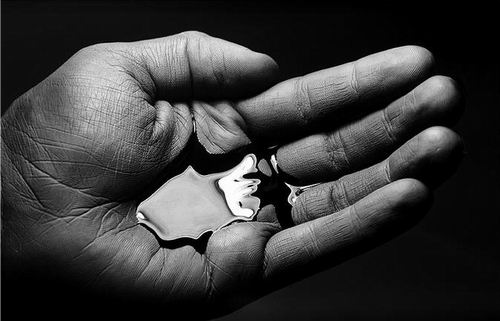
“你用什么记录自己的生活？”我问道。
A回答：文字。
B回答：摄影。
C回答：音乐。
D回答：冥想。
E回答：Blog。
F回答：恋情。
G回答：影像。
H回答：工作......
......
有一个人回答：遗忘。
南京地铁 @ Nov 16, 2005
中文网志年会上几个人谈到南京，居然有人还不知道南京有地铁了，我有义务做个宣传。

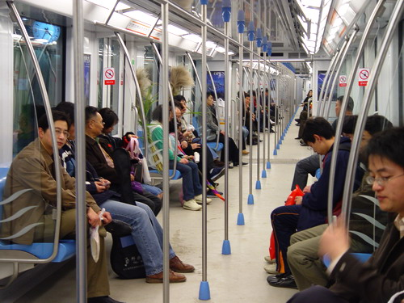
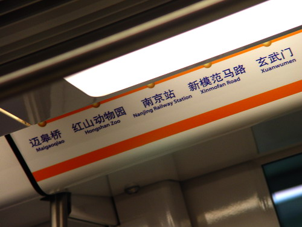
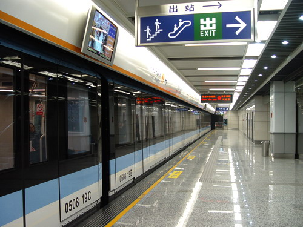
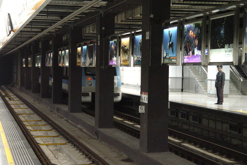
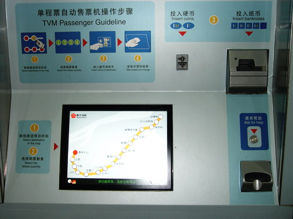


11年记忆的影：虎子 @ Nov 16, 2005
接到虎子的电话，时间一下子跳到11年前，一个纤瘦摸样的少年浮现在我的脑海中。
时间仿佛出现断裂，记忆变得不真实起来。好象没有经过这11年，好象还是昨日...我们青春年少的笑与惑。
在进香河附近绕了两个圈才找到他住的那家酒店，电话里的声音依稀还带着过去所熟悉的口音，当他戴着宽大的墨镜从酒店大厅里走出来时，我一眼就认出来是他、是虎子，体型比过去宽厚，1.84M的身高，皱眉的习惯一点没变，即使笑起来有时也会皱着眉。他的新发型、瑜珈式的衣裤、宽了的身体等等一切形象把少年的他包裹其中，多么熟悉的人啊！
对过去记忆深刻的片段，是我经常忘记拿宿舍钥匙，他会从气窗爬上去，探下大半个身体伸手从里面把门打开，每每帮忙乐此不疲。他会在周末带好吃的椰蓉面包给我，记忆中的他总是很活跃地在我面前说笑，微皱着他的眉。那时，我戴着一顶黑色的棒球帽，他说好看说第一次见到有人这么打扮，问我那顶帽子是否还在？他还记得我脸上的雀斑，记得那时的我喜欢问“为什么？然后呢？”......谈起三个让他记忆犹新的场景......
我们如此自然的交谈，仿佛没有11年的距离，从少年到成年人，谈话的节奏和感受如此熟悉，有亲人的温暖。他告诉我他写的第一首歌就是写我的，11年过去仍然能清楚地记得歌词内容：“闭上眼睛静静的怀疑过去...没有错误，没有没有遗憾...”据说后来他爱的女孩儿性格和我差不多，外表文静内心狂野，性格独立同时又很粘。当年他给我的印象是：对我很好，总是帮我做这做那的，觉得这个人怎么轻易就对别人那么好呢？他说你知道吗每次那么做之前我都要斗争十几遍，才会伸手帮你拿行李什么的，对你的感受就象《密西西里的美丽传说》里13岁男孩对玛莲娜的那种经历，13岁的他骑着单车，在小镇的各个角落穿梭，如影随形地跟踪，窥视她的生活，那个被荷尔蒙掩没的少年。恍悟自己的不经意却成了他人记忆中的深刻。令人感动的不是别的，是那个年纪。那个时刻被感动同时也感动别人的年纪。那个时候的甜蜜和烦恼，都是在今后一生最珍贵的收藏。
虎子现在签约德国一家电视公司，每月基本上都要去欧洲参加音乐演出等活动。在北京一家马术俱乐部里买了套480平米的别墅，养了四条狗：可卡、吉娃娃、德国牧羊犬和苏格兰牧羊犬。有个照顾他们的保姆，成立了7、8个人的音乐制作室，工作地点就在那套别墅里。出了四张专辑，我手上有他送的其中两张，期待下周他能带给我另外两张。在我寻找合成乐的阶段虎子的音乐正好满足了我，他制作的氛围音乐很符合我的需求。用餐时才知道他不吃荤只吃素，因为他加入了新基督教，这种教与宗教不同，仅以聚会形式存在，中国俗语“酒肉穿肠过，佛祖心中留”大致能描述其新基督教的概念一二。
我们为今天见到的彼此感到欣慰，因为我们都确定对方的状态是积极的，我们都在努力的生活。

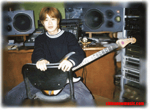
少年的虎子
虎子简介：
 1978年出生的我6岁开始学习舞蹈，13岁参军，在部队文工团当了一名舞蹈演员。如果我不是一个AB型血的双鱼座人，或许我可以做一个很好的舞蹈演员，或者我会从事一辈子和舞蹈相关的工作，可是我这种人的性格当中充满了矛盾，在部队期间一次偶然的机会听到了Cocteau Twins摇滚乐的，于是开始每天十几个小时地苦练吉他，为了逃避舞蹈排练，甚至用开水将自己的脚烫伤......
1978年出生的我6岁开始学习舞蹈，13岁参军，在部队文工团当了一名舞蹈演员。如果我不是一个AB型血的双鱼座人，或许我可以做一个很好的舞蹈演员，或者我会从事一辈子和舞蹈相关的工作，可是我这种人的性格当中充满了矛盾，在部队期间一次偶然的机会听到了Cocteau Twins摇滚乐的，于是开始每天十几个小时地苦练吉他，为了逃避舞蹈排练，甚至用开水将自己的脚烫伤......
专辑简介：《口痴》的方向不是东行的美洲底特律派系，恰恰相反，是背道而驰的西方欧陆。借助于德国的“杂音”派的思想，解决Minimal音乐在中国的生存。简单的说来，就是《口痴》从核心上还是延续着《叛客》去繁求简的艺术概念，力求在IDM的空间中使外观朴素的Minimal(简约)概念在国内生根。一种痴心不改、义无返顾的举动。在关注国际电子音乐舞台发展的潮流时，虎子还诉求于整体趋势中的根源路线，直白的说就是“落叶归根”，借助于非洲的Dub音乐深化主题。这种手段几乎是和站在国际电子乐界潮流浪尖上的Pole与其同僚的做法是如此惊人的巧合。当然，我们可以更自豪的说，这并非某种意义上的巧合。而是，我们真的看到了国内真的有个“把脉”精准的“郎中”。（试听点击）
一、11年后的虎子
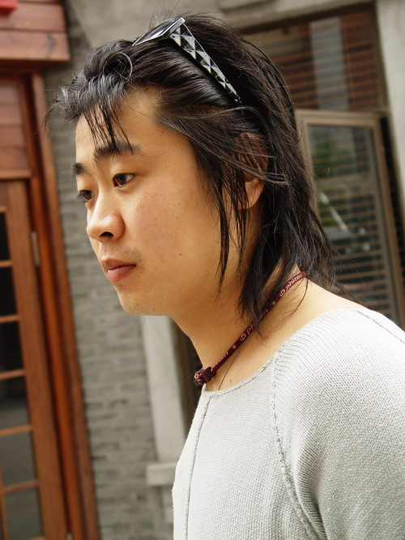
二、与虎子在1912泰国餐厅
他在我身后再不是11年前弱不经风的少年。
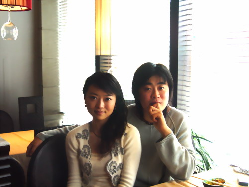
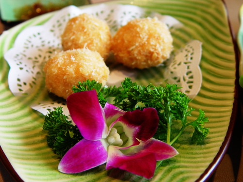

三、与虎子在“悠仙美地”茶餐厅
很喜欢合影里我们的表情，为这张片子编辑出这种恍惚的曲线、失真的色彩，两个人的神态使我产生一种酸楚感，没有过程就那么长大了，如两个相依为命成长起来的姐弟，不可触碰的年华沉淀在虚恍的光影中。
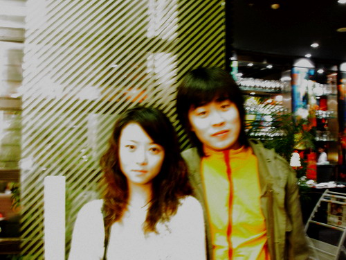
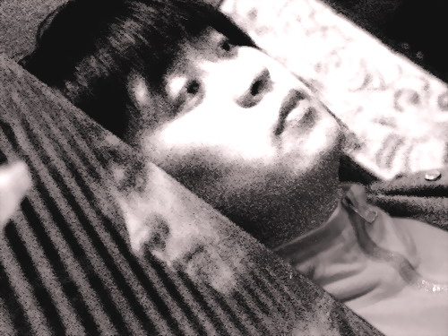


For The First Time @ Nov 16, 2005
艺人名称： 洛史都华 – ROD STEWART
中文专辑名称：爱在今夜 ﹣16首超级情歌精选
英文专辑名称：IF WE FALL IN LOVE TONIGHT
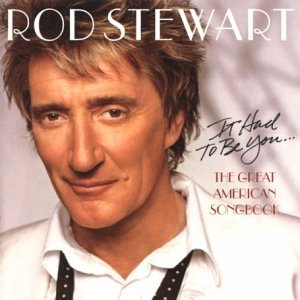
因着嗓音沙哑且性感而树立个人风格的英籍巨星Rod Stewart，早在身为“Jeff Beck Group”成员时期，即已享有歌声非凡的赞誉。自六○年代中期起，经过“Five Dimensions”、“Hoochie Coochie”、“Shotgun Express”、“Jeff Beck Group”、“Small Faces”(后更名为“Faces”)等乐团的琢磨历练之后，Rod终于在七○年代可以独当一面，展开一生灿斐然的歌唱生涯。洛·史都华（Rod Stewart）于1945年1月10日出生于伦敦，本名 Roderick David Stewart。豆沙般的嗓音，桀骜不驯的舞台形象，源源不断的创作灵感构成了摇滚巨星Rod Stewart。他被许多人称为摇滚公鸡.你有可能并不熟悉这个名字,但是你一定听过他演唱的这些歌曲:Sailing,Have I told you lately,For The First Time等等(更多见摇滚公鸡史都华穿透人心之作...)
Rod Stewart是个优异的歌者，不时也扮演作曲的感情故事，可以是柔情无限的抒情乐章，可以是大胆狂放的摇滚旋律，可以是温润清雅的民谣小品，也可以是带有一抹黑人音乐姿采的慢版佳构，于是，在这张萃选出他历年来16首抒情作品的精选辑里，所有属于Rod Stewart特有的知性、温柔、深情与感动，于此汨汨而泻，成为一种值得记录与珍藏的回忆：
76年全美冠军经典Tonight s The Night的挑情撩人；
深获本地歌迷喜爱的感伤作I Don t Want To Talk About It；
93年英/美Top 5 Unplugged作品Have I Told You Lately的录音室混音版；
77年英Top 3、美国Top 4的爱情宣言You re In My Heart；
77年重释Cat Stevens之作First Cut Is The Deepest，蝉联英国四周冠军；
曾于 76年登上英国榜季军的Sailing，已成英国皇家海军的非官方军歌；
90年翻唱Tom Waits的Downtown Train，承载着无尽的哀愁驶向美国榜Top 3；
另一首演绎自Tom Waits作品的Tom Traubert s Blues唱尽人事沧桑；
94年与Bryan Adams、Sting破天荒携手为电影“豪情三剑客”高歌颂扬爱情，攀登美国榜榜首；
另外，Rod选择两首名作予以重唱，即Dan Hill 77年Top 3抒情名曲Sometimes When We Touch与Leo Sayer 77年冠军情诗When I Need You，而两首开幕曲If We Fall In Love Tonight和For The First Time则是全新创作。这般多情的Rod Stewart，听来可是非常的抒情。
Are those your eyes
Is that your smile
I’ve been looking at you forever
yet I never saw you before
Are these your hands holding mine
Now I wonder how I could have been so blind
And for the first time I am looking in your eyes
For the first time I’m seeing who you are
I can’t believe how much I see
when you’re looking back at me
now I understand what love is, love is
for the first time
Can this be real
Can this be true
Am I the person I was this morning
and are you the same you
It’s all so strange
How can it be
All along this love was right in front of me
And for the first time I am looking in your eyes
For the first time I’m seeing who you are
I can’t believe how much I see
when you’re looking back at me
now I understand what love is, love is
for the first time
Such a long time ago I had given up
on finding this emotion ever again
But you’re here with me now
Yes I found you somehow
and I’ve never been so sure
And for the first time I am looking in your eyes
For the first time I’m seeing who you are
Can’t believe how much I see
when you’re looking back at me
Now I understand what love is, love is
for the first time
For the first time
Butterfly @ Nov 12, 2005
1999年来自洛杉矶的年轻乐团Crazy Town以一曲“Butterfly”勇夺Billboard流行及摇滚榜双料冠军，这首融合摇滚吉他与嘻哈节奏的佳作，获得来自各方广泛的支持，不仅在一般播放流行、另类、摇滚音乐电台，MTV音乐频道有大量的点播，在一些专门播放黑人饶舌音乐的电台也有超人气的支持，带动专辑销售冲破百万大关，一举攻入全美专辑销售排行Top 9，迅速全面侵略全球音乐市场！
Darkhorse是Crazy Town经过两年精心策划的最新专辑，找来了P.O.D、 Motorhead的制作人Howard Benson及Sugar Ray、 Hole的御用混音师Chris Lord Al联手打造。耳尖的乐迷不难发现他们在此辑的音乐呈现上加重了摇滚吉他强度，同时在演唱的部份也更有力道，嘶吼的饶舌唱腔足以与当红的Rap Metal任一乐团相庭抗礼，保证够呛劲道十足。首支单曲“Drowning”该团的两位灵魂唱将Epic及Shifty一前一后互飙歌声，将整曲带入一个高潮境界；另外有Weezer核心人物Rivers Cuomo前来助阵的“Hurt You So Bad”..。值得一提的是Crazy Town在此辑中更用心在旋律的创作上，整辑听下来有种顺畅又满载冲击力的充实感，一个趋于成熟稳重乐团的力道在此展露无遗，禁得起细细品味。最后，这张专辑有二首必听的“隐藏歌”(hidden track)—“You’re The One”及“Them Days”都超棒，不要错过了。
Artist(Band):Crazy Town
Butterfly.mp3
Come my lady
Come come my lady, you’re my butterfly
Sugar baby (X2)
Such a sexy, sexy pretty little thing
Fierce nipple pierce you got me sprung with your tongue ring
and I ain’t gonna lie cause your loving gets me high
So to keep you by my side there’s nothing that I won’t try
Butterflies in her eyes and the looks to kill
Time is passing
I’m asking could this be real
Cause I can’t sleep I can’t hold still
The only thing I really know is she got sex appeal
I can feel too much is never enough
You’re always there to lift me up
When these times get rough
I was lost, now I’m found
Ever since you’ve been around
You’re the women that I want
So yo, I’m putting it down.
Chorus: (2x)
Come my lady
Come come my lady, you’re my butterfly
Sugar baby,
Come my lady
Youre my pretty baby, ill make your legs shake
You make me go crazy
I don’t deserve you unless it’s some kind of hidden message
to show me life is precious
I guess it’s true
But to tell the truth, I never really knew til I met you
see I was lost and confused
Twisted and used up
I knew a better life existed but thought that I missed it
My lifestyle’s wild I was living like a wild child
Trapped on a short leash paroled the police files
So yo. What’s happening now?
I see the sun breaking down into dark clouds and a vision of you standing
out in a crowd, so
CHORUS
Hey sugar momma, come and dance with me
The smartest thing you ever did was take a chance with me
what ever tickles your fancy
Girl it’s me and you like Sid and Nancy
So sexy….almost evil
Talkin’ about butterflies in my head
I used to think happy endings were only in the books I read
But you made me feel alive when I was almost dead
You filled that empty space with the love I used to chase
And as far as I can see it don’t get better than this
So butterfly, here is a song and it’s sealed with a
kiss and a thank you miss.
Come and dance with me
Come and dance with me
Come and dance with me
So come and dance with me, uhhuh uhhuh
CHORUS
不安 @ Nov 11, 2005
此时心情突然有些懒散，还未到达沮丧的边儿上，但莫名的不安......找到一些原因：
一、积下来一些工作一时半会儿做不完，担心如若不尽快处理会出什么麻烦。
二、其次属于自己的时间越来越少，更别说酝酿心情看书了。而这段时间读书的欲望又很强烈，于是我在家里的各个地方包括车上分别放了新买的书。前天大雾，南京机场所有航班均晚点，客人乘坐的航班从中午延误到晚上，我还是去早了，在大厅卖书的地方转悠，居然买到8本一套的《老照片》，虽然里面少一本，但我还是决定买下那7本。一友说换了我宁可不买，等看到完整的全套再买。那么我，不会因为缺一本而放弃另外7本书的。
三、没时间更新blog，连续三个周末在外地，平时工作又忙，吃喝拉撒睡又是那么占用时间。食欲不好时真想喝流质维生。时常怠慢了心情，是否需要准备一本旅行时随身携带的小记录本，随时随地记下自己的所思所想？
四、纵然每日充实到非常，缺觉到非常、快乐到非常，但塞得满满的时空让我经常处于不确定、没有方向感的状态中，无暇顾忌太多琐碎的周遭环境，乘过山车时你还来得及仔细想点什么吗？
五、塞满的时空淡漠了亲情和友情，想到这些心里隐隐得恐慌。
六、昨天《e时代周刊》的副主编wangpei向我要照片，需要很大很大像素的。我居然找不到存储pix的CD包，午夜时分心凉了半截， 去年因为笔记本硬盘坏了丢失很多珍贵的旅行照片，现在不会又出现同样的厄运吧？说到《e时代周刊》，此次年会上听wangpei讲这是他们做的最后一期采访，这期做完他们的报纸也许会转型做丰胸广告之类的内容，他们也许也将各奔东西。据说我的采访做了整版，本来计划用我的照片做封面的，但提供给他们的PP实在太小，于是封底mm上了封面。Chinese Tea有幸成为末班车上的一员，其实也不知是啥滋味。这是我第二次上报纸，第一次是2002年被南京新华社办的针对office lady的什么报纸拉去拍封面，那片子的效果是我想从记忆中挖掉的部分，呵呵~~
他们居然用“淑女本色中国茶”作为标题，当时在MSN上我对朋友就说了句“靠，我压根就不是什么淑女，简直是亵渎这个词...”怎么都觉得不爽，真实的我跟淑女永远搭不上茬。我喜欢下面这段：
中国茶当时没有意识到，这一试就一发不可收，一直坚持到今天。如今她的名字和她的Blog一起，成为中文Blog圈里一段传奇。她的Blog在Technorati上已经有205个反向链接，按照AOL收购WeblogsInc.的出价，每个反向链接564.64美元，她Blog的价值超过11.5万美元，当然这是一个数字游戏。
喜欢归喜欢，但我知道那不过是有价无市，不过是数字游戏而已。朋友马上线上写到“等赚了钱，我来买。”我说那可是美圆哦...（《大腕》对白）...呵呵~~无论如何，这样的报道也令我不安，总觉得一旦娱乐被严肃的铅字呈现出来时好象就少了许多乐趣。
********************************************************************
扎堆年会之后，促使自己对两个blog“Chinese Tea & Te Cinese”温故知新一番。本因忙碌而衰减的热情随之逐渐回温，做blog需要的是热情和执着的精神，不管给什么人看、做的什么内容，这个平台总能帮你找到良师益友。年会上的各个演讲帮助我开阔眼界、获得新知，最最重要的是结识了一些很nice，professional和facetious…的人！人是社会动物，交流无疑能代来意想不到的快乐。blog提供了一个便捷的交流途径。这次年会IT业给我一个新印象，好象每个人都充满年轻的激情，动辄就自己创业了，比起经济贸易行业来似乎要容易的多？！
博客大奖赛 @ Nov 11, 2005
因为忙碌而无暇写BLOG，因为忙碌而欠下许多想做而未做的事情。整个上午有许多琐碎繁杂的工作，心里想着，行为上懒惰着，想推到下午再积极的开始。在Sunset House 上看到一篇有关博客大赛的文章，这才知道又有什么人组织了评比，顿觉无趣。这里转载一下，以示对这个世界我还有些许的关心。
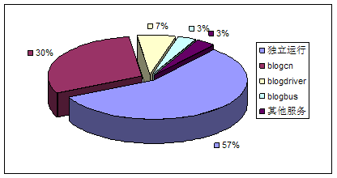
上个月开始就陆续有不同背景、几个版本的博客大奖赛粉墨登场。最先看到的是BOKEE的“第二届”博客大赛，不知道哪位仁兄把俺推荐上去，示众了整整一个月却只有区区两票，而第一名已经有五千多票鸟，所以就不号召大家给俺投票了——咱即使乘坐神舟六号都追不上啊。不过当俺看到中国茶10票，KESO同学8票，车东同学2票，顿时明白了方博这次搞的比赛原来是闹着玩的，要不然为啥FRJJ的“官方博客”也才只有2票捏？另外热心搞博客大奖赛的还有新浪和搜狐，相比于前者小气地只允许自己的用户参与比赛，搜狐这一次表现得要更加性感，所以首届全球中文博客大奖赛起手就高出首届中国博客大赛半个顶天力地的头——下嘴唇在地上，上嘴唇在天上……
回想起[2003年度十佳Blog评选]，当时唱主角的还是独立BLOG，OWEN同学按排名前30的数据统计Blog分布情况依次为：独立运行（57%），Blogcn，Blogdriver，Blogbus，其他服务。现在，在草根之上，盛开了好多好多提供BLOG服务的WEB 2.0之花啊。
老实说，俺搞不清楚博客大奖赛到底比的是什么，总不能比大小（BSP的，哈哈）吧？虽然日落酒馆已通过海选并进入到PK阶段，但没有心爱的王老板、漂亮的中国茶、温柔的蜂窝煤和知性的MOKO说话，这最佳人气博客到底还是让人心生遗憾。
Chinese Blogger Conference 现场 @ Nov 08, 2005


Chinese Blogger Conference @ Nov 04, 2005
在Chinese Blogger Conference召开之前，这里介绍一下blogger·china’s photos ，实在是佩服做这个工作的人，能把那么多写BLOG的人照片收集起来，精神精力都是无与伦比的...认识一些未见其人先睹其态的面孔，有些可爱有些风雅有些......先熟悉一下他们的照片，如能在会场相遇，会是怎样的开始？我关注的BLOG有限，最近因为工作和其他事情忙碌，更无暇经常去看更新。我对网聚有莫名的烦感，但对这次大会却有些许期待。从2002年4月开始写BLOG至今，也许就是热情支持着的。
此次收到大会邀请有些意外，先前听说大多与会者都有某某公司机构的头衔，人数不能超过199人（法规上：200人属非法集会）。
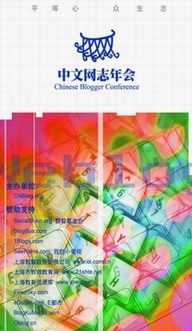
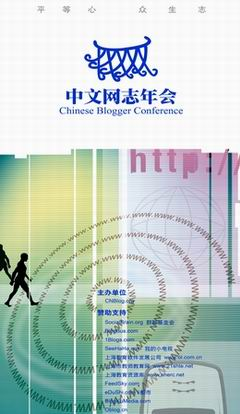
确认参会的受邀特色Blogger：
广州 http://www.postshow.net
广州 http://in.comengo.net
北京 http://blog.wespoke.com
北京 http://www.chedong.com
北京 http://www.topku.com
深圳 http://www.zuola.com/weblog
北京 http://doubleaf.com
北京 http://herock.net
香港 http://www.azuremedia.net/tech/chi
重庆 http://woooh.com/
台北 http://blog.schee.info
台北 http://heterotopias.org
香港 http://sidekick.mocasting.com
香港 http://blog.hoiking.org
北京 http://www.1kg.cn
上海 http://www.wangjianshuo.com
福州 http://www.icebin.net/
柳州 http://www.kenlee.cn
南京 http://christina.tecinese.com/
上海 http://slashdotcn.org/
会议地址：上海巨鹿路915号巨鹿大厦二楼
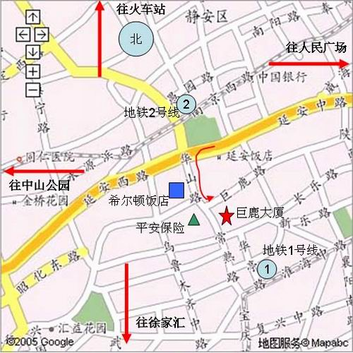

cnbloggercon-badge-samples

cnbloggercon-badge-participant- mini
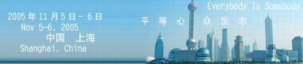
年会日程安排表
11月5日，第一天 上午
8：00—9：00 签到
9：10-9：20 开幕词
9：20-10：20 第一场讲演，isaac
10：20-10：30 休息
10：30-11：30 第一场对话与讨论：rebecca主持，全球化与blogger
第一天 中午
12：00-13：40 午餐（会）
第一天 下午
14：00-15：00 第二场讲演，XiuLi，主题：blog与教育
15：00-15：10 休息
15：10-16：10 第二场对话与讨论：hopesome主持，podcasting主题
16：10-17：10 第三场讲演，Wenxin，主题：weblog技术
第一天 晚上
夜游黄浦江（自愿参与方式）
11月6日，第二天 上午
9：00-10：00 第四场讲演，Horse讲演，主题：Web2.0
10：00-10：10 休息
10：10-11：10 第五场讲演，吕欣欣，主题：rss
11：10-11：40 特色blogger推介
12：00-13：40 午餐会
14：00-15：00 第六场讲演，SayOnly，主题：blog与媒体
15：00-15：10 休息
15：10-16：10 第三场对话与讨论：Jack主持，tags/folksonomy主题
16：10-16：30 闭幕词
宜兴自驾行 @ Nov 02, 2005
岁月会让皮肤起皱，失去对生活的热情会让灵魂起皱。
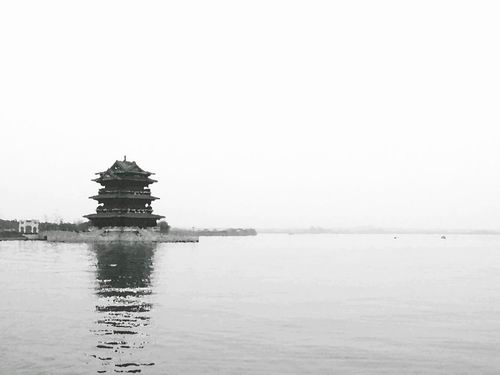
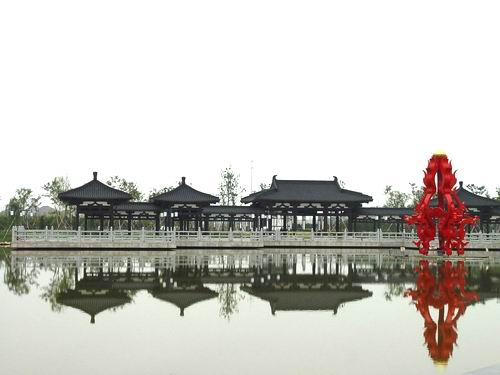
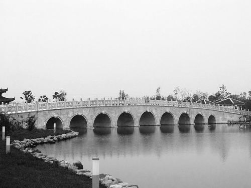
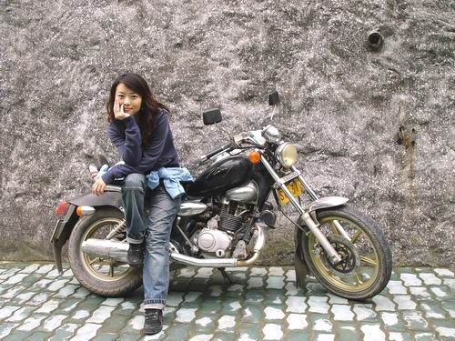
发如雪 @ Nov 02, 2005
 发如雪.mp3
发如雪.mp3
曲:周杰伦 词:方文山
狼牙月 伊人憔悴 我举杯 饮尽了风雪
是谁打翻前世柜 惹尘埃是非
缘字诀 几番轮回 你锁眉 哭红颜唤不回
纵然青史已经成灰 我爱不灭 繁华如三千东流水
我只取一瓢爱了解 只恋你化身的蝶
你发如雪 凄美了离别 我焚香感动了谁
邀明月 让回忆皎洁 爱在月光下完美
你发如雪 纷飞了眼泪 我等待苍老了谁
红尘醉 微醺的岁月 我用无悔 刻永世爱你的碑
Rap：
你发如雪 凄美了离别 我焚香感动了谁
邀明月 让回忆皎洁 爱在月光下完美
你发如雪 纷飞了眼泪
我等待苍老了谁 红尘醉 微醺的岁月
啦儿啦 啦儿啦 啦儿啦儿啦 啦儿啦 啦儿啦 啦儿啦儿啦
铜镜映无邪 扎马尾 你若撒野 今生我把酒奉陪
《TRAINSPOTTING》中的一段台词 @ Nov 01, 2005
 Choose a job.
Choose a job.
Choose a career.
Choose a family.
Choose a fucking big television.
Choose washing machines, cars, compact disc players and electrical tin openers.
Choose good health, low cholesterol, and dental insurance.
Choose fixed interest mortgage repayments.
Choose a starter home. Choose your friends.
Choose leisurewear and matching luggage.
Choose a three-piece suit on hire purchase in a range of fucking fabrics. Choose DIY and wondering who the fuck you are on a Sunday morning.
Choose sitting on that couch watching mind-numbing, spirit-crushing game shows, stuffing fucking junk food into your mouth.
Choose rotting away at the end of it all, pissing your last in a miserable home, nothing more than an embarrassment to the selfish, fucked up brats you spawned to replace yourselves.
Choose your future. Choose life…But why would I want to do a thing like that? I chose not to choose life. I chose something else.
And the reasons?
There are no reasons.
Who needs reasons when you’ve got heroin?